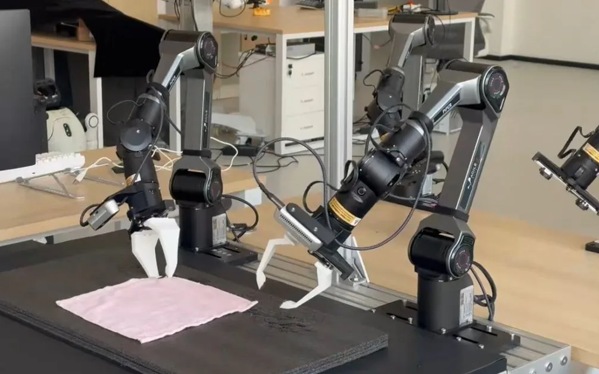

· 01 / 工程与机器人Engineering & Robotics
Bimanual Folding
两台 Piper 机械臂一起折毛巾。从"能把机械臂开到毛巾附近"到"能把整条毛巾折好"，中间隔着的不是代码量，而是一次失败之后该怎么改。 Two Piper arms folding a towel together. Between "the arm reaches the towel" and "the towel comes out folded" there was no amount of code — only what to change after a failure.

背景Background
双臂折叠毛巾看起来是个"显然可以做到"的任务，但把它放到真实的桌面上、让毛巾随机摆放之后，难点立刻分成两块：一是策略能不能稳定抓住指定的角；二是抓住之后，能不能把抬升、折叠、释放这一整套动作做完。
我们最初用直接模仿学习训练，机器人能把机械臂带到毛巾附近，却经常在合拢的一瞬间夹空。多视角与执行步长筛查进一步确认了两件事：没有训练过的视角不能直接替换，更短的动作执行段也不会自动提高闭环精度。
Folding a towel with two arms looks like something that should obviously work. Put the towel on a real desk, in a random pose, and the difficulty splits in two: can the policy reliably grasp the designated corner, and once it has hold, can it finish the lift, the fold and the release?
Direct imitation learning got the arms to the towel and then dropped it at the last moment. Screening across views and action-chunk lengths confirmed two things: an untrained camera view cannot simply be swapped in, and a shorter action chunk does not by itself tighten the closed loop.
目标Goal
让双臂系统在随机摆放的毛巾上稳定完成整条折叠流程，同时回答一个更具体的问题：在策略会失败的地方引入人工接管，这些纠偏轨迹应该怎么用？ 从头训练，还是继承已有的基础能力继续微调？
Get a dual-arm system through the whole fold on randomly placed towels, and answer a sharper question along the way: when a human takes over exactly where the policy fails, how should those corrective trajectories be used? Train from scratch, or fine-tune on top of what already works?
我的贡献My contribution
我是这个项目的作者之一（孟想，与华东理工大学的刘明哲共同完成，指导教师为上海交通大学人工智能学院的郭宁），整个暑期在类人智能实验室（HIROL，团队由连文昭教授带领）完成。
- 设计了对照实验：同一批纠偏数据，分别用于从头训练与继承微调，并定义了 150 次的评测协议（3 个模型 × 5 条毛巾 × 每个条件 10 次，摆放随机）。
- 打通了纠偏式数据采集流程：策略运行到即将失败时切换到 leader 接管，由人完成后续抓取、抬升与折叠，接管区间被完整记录并转成训练数据。
- 为毛巾角的精细夹取，把两侧 Piper 的原生夹爪指换成了更细长的定制夹指，减少接近角点时的空间干涉。
- 完成了实验记录与结果整理（EXPERIMENT.md、results.csv），并写清了结论的适用范围与边界。
I am one of the two authors of this project (Xiang Meng, with Mingzhe Liu at ECUST, advised by Ning Guo of Shanghai Jiao Tong University's School of Artificial Intelligence), carried out over a summer with the Human-Inspired Robotics Learning Lab (HIROL), led by Prof. Wenzhao Lian.
- Designed the controlled comparison — the same corrective data used to train from scratch and to fine-tune — and defined the 150-trial evaluation protocol (3 models × 5 towels × 10 trials per condition, random placement each time).
- Built the corrective data pipeline: when the policy is about to fail, authority switches to the leader arm, the human completes the grasp, lift and fold, and the takeover interval is recorded and converted into training data.
- Replaced the native gripper fingers on both Piper arms with thinner custom fingers, so the gripper stops colliding with the towel corner on approach.
- Wrote up the experiment and the results (EXPERIMENT.md, results.csv), including where the conclusions stop being valid.
技术实现Implementation
这不是一个新的机器人软件框架：机器人、相机、遥操作、策略推理、控制权切换和数据录制都跑在 physical_ai_runtime 里，这个仓库只保留实验设计、过程和结果。
Orbbec 顶部相机 + 左右腕部相机 + 14 维双臂状态
│
▼
physical_ai_runtime
┌───────────┬───────────┬───────────┐
│ ACT 推理 │ RMI 控制权 │ Episode 录制 │
└───────────┴───────────┴───────────┘
│ ▲
▼ │
双 Piper follower 双 leader 人工接管
│
▼
MCAP / HIL 轨迹 → LeRobot 数据 → ACT 训练
- 两台 Piper follower 负责执行，双 leader 用于示教与 HIL 接管。
- 模型输入是顶视图、左右腕部 RGB 与 14 维机器人状态，输出是左右臂与夹爪的 14 维关节参考。
- RMI 在 Policy 与 Teleop 之间切换控制权，并记录接管区间；episode recorder 保存相机、关节状态、动作与接管元数据，随后转成 LeRobot 数据集。
- 三条训练路线：base20k（100 条示教直接抓角，20k steps）、scratch20k（101 条 HIL 完整任务轨迹从头训练，20k steps）、finetune10k（从 base20k 初始化，在同一批 HIL 数据上微调 10k steps）。
This is not a new robot software framework. The robots, cameras, teleoperation, policy inference, authority switching and recording all live in physical_ai_runtime; this repository keeps the experiment design, the process and the results.
Orbbec top camera + wrist RGB + 14-dim bimanual state
│
▼
physical_ai_runtime
┌───────────┬───────────┬───────────┐
│ ACT 推理 │ RMI 控制权 │ Episode 录制 │
└───────────┴───────────┴───────────┘
│ ▲
▼ │
双 Piper follower 双 leader 人工接管
│
▼
MCAP / HIL 轨迹 → LeRobot 数据 → ACT 训练
- Two Piper followers execute; two leader arms are used for demonstrations and HIL takeovers.
- The policy reads the overhead view, the two wrist cameras and a 14-dim robot state, and writes 14-dim joint references for both arms and grippers.
- RMI switches authority between Policy and Teleop and records the takeover intervals; the episode recorder saves camera, joint state, actions and takeover metadata, then converts them into a LeRobot dataset.
- Three training routes: base20k (100 direct corner-grasp demonstrations, 20k steps), scratch20k (101 HIL task trajectories, trained from scratch, 20k steps) and finetune10k (initialised from base20k, fine-tuned on the same HIL data, 10k steps).
成果Results
| 模型Model | 训练方式Training | 成功数Successes | 成功率Rate | |
|---|---|---|---|---|
| base20k | 100 条蓝色方巾直接抓角示教，20k steps | 100 direct corner-grasp demos, 20k steps | 13 / 50 | 26% |
| scratch20k | 101 条 HIL 完整轨迹从头训练，20k steps | 101 HIL task trajectories from scratch, 20k steps | 10 / 50 | 20% |
| finetune10k | 从 base20k 初始化，同一 HIL 数据微调 10k steps | From base20k, fine-tuned on the same HIL data, 10k steps | 35 / 50 | 70% |
微调模型比基础模型高 44 个百分点，比从头训练的 HIL 模型高 50 个百分点，并且在五条毛巾上都取得了更高的成功数。黄色方巾没有出现在训练数据里，微调模型成功 6/10；白色长方形同时改变了颜色、实例和形状，成功 4/10。
Fine-tuning beat the base model by 44 points and the from-scratch HIL model by 50 points, and scored higher on every one of the five towels. The yellow towel never appeared in training and still succeeded 6/10; the white rectangle changed colour, instance and shape at once, and succeeded 4/10.
对当前双臂毛巾折叠系统，先学习直接抓角，再用策略失败边界上的人工接管轨迹进行继承微调，是一条有效的训练路线。
For this dual-arm towel-folding system, learning to grasp the corner first and then inheriting from it with corrective human takeovers taken at the policy's failure boundary is an effective training route.
反思Reflection
这个结论只适用于本轮硬件、相机、训练 seed 和随机摆放的测试。实验里没有保存每次摆放的位置与朝向，所以它不能用来画位置鲁棒性曲线，也不能证明不同模型遇到的摆放难度完全一致；定制夹指与原生夹指之间也没有做单独对照，因此我不报告它的独立收益。
接下来最想做的是把"什么时候失败"变成可以被记录的东西：把每次尝试的失败原因标注出来，让接管不再依赖操作员的临场判断，而是有依据地触发。
The conclusion holds only for this round of hardware, cameras, training seed and random-placement testing. We did not record the position and orientation of every placement, so it cannot be used to draw a positional-robustness curve, nor to claim that the models met equally hard placements. We also ran no isolated comparison between the native and the custom fingers, so I do not claim a standalone gain for them.
What I want next is to turn "it failed" into something recordable: label why each attempt failed, so a takeover is triggered by evidence instead of by the operator's judgement in the moment.